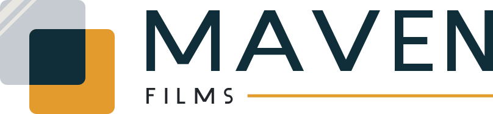
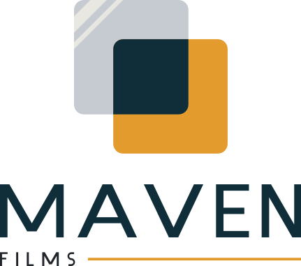
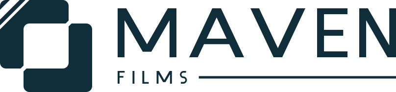

Idea: un panel de vidrio y una lámina de película superpuestos. Donde se cruzan, el vidrio queda protegido (Petróleo). El destello en el vidrio y el Ámbar de la película cuentan el producto sin escudos ni soles genéricos.


Deja libre un margen de x en los cuatro lados, donde x = ¼ del lado del panel de vidrio (≈ 19 % de la altura del símbolo). El margen escala con el logo: nunca uses una distancia fija.
Dentro de ese espacio no van textos, bordes ni otras imágenes.
| Versión | Pantalla | Impresión * | Nota |
|---|---|---|---|
| Horizontal | 220 px de ancho | 45 mm | Por debajo, FILMS deja de leerse: usa el símbolo solo. |
| Apilado | 160 px de ancho | 32 mm | Mismo criterio. |
| Símbolo completo (con destello) | 32 px | 8 mm | Por debajo de 32 px el destello desaparece. |
| Símbolo versión pequeña | 16 px | 5 mm | Archivo simbolo-pequeno / favicon. Sin destello. |
* Mínimos de impresión recomendados a partir de las pruebas en pantalla; confirmar con el impresor y con una prueba real en vinilo antes de producción.
Regla de uso 60 · 30 · 10. CMYK es una conversión aproximada; los equivalentes Pantone están pendientes y deben definirse con el impresor contra una prueba física.


En el reverso, el traslape es un hueco real: deja ver el fondo. Úsalo siempre que el fondo sea oscuro; la versión a color funde el traslape con un fondo Petróleo. Sobre fotografías, usa blanco o negro en una zona tranquila, o el ícono con tile.
| Combinación | Contraste | Uso |
|---|---|---|
| Petróleo sobre Concreto / blanco | 11.5 : 1 / 14.3 : 1 | Texto y logo. Recomendado. |
| Concreto / blanco sobre Petróleo | 11.5 : 1 / 14.3 : 1 | Texto y logo reverso. |
| Ámbar sobre Petróleo | 6.1 : 1 | Formas, botones, detalles. |
| Grafito sobre Concreto | 12.3 : 1 | Texto de apoyo. |
| Ámbar sobre blanco | 2.3 : 1 | Nunca como texto. Solo forma decorativa (regla, película del logo). |
| Acero sobre blanco | 1.6 : 1 | El vidrio se ve suave sobre fondos claros: es esperado. No lo uses como texto. |
El wordmark MAVEN FILMS es un dibujo propio (letras construidas como trazos): no lo reescribas con una fuente; usa siempre los archivos. Para textos de apoyo se sugiere Inter (licencia libre OFL), en peso regular y semibold; alternativa del sistema: Segoe UI / Arial. Confirmar contra el manual de marca vigente de Maven.
| svg/ | Maestros vectoriales (color, reverso, negro, blanco, Petróleo; horizontal, apilado, símbolo, wordmark). Úsalos para impresión y rotulación. |
| png/ | Raster transparente para documentos y redes (símbolos 1024 px, lockups 2400 px). |
| web/ | favicon.ico, favicon.svg, íconos 16–512 px, apple-touch, maskable, site.webmanifest y head-snippet. |
Preguntas sobre uso de marca: [nombre y correo del responsable de marca — pendiente de completar].
Importante: las letras del wordmark están dibujadas a mano como paths, no son una fuente licenciada; un diseñador debería revisarlas antes de producción masiva. No se ha realizado búsqueda de marca registrada: se recomienda una consulta ante la SIC y una búsqueda por imagen antes de usar la marca comercialmente.